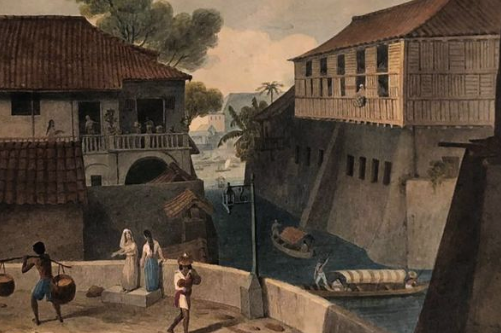

Spanish Era

In the 17th and 18th centuries, the role of the Contador de Resultas was akin to that of the Commissioner of Internal Revenue, serving as the Chief Royal Accountant and the ultimate authority in financial decisions unless overturned by the Council of Indies. Various taxes were levied on the inhabitants during this period, including an annual tribute or head tax of one gold maiz, taxes on jewelry and gold trinkets, and indirect taxes on items such as tobacco, wine, cockpits, burlas, and powder.
From 1521 to 1821, the Spanish treasury had to provide an annual subsidy of P 250,000.00 to the Philippines due to the country's poor financial condition, primarily attributed to an ineffective revenue collection system. The tributo, initially set between 8 to 10 reales, and forced labor, known as polo y servicio, were integral to the taxation network. The cedula replaced the tributo, enabling Spain to monitor individuals liable to pay taxes.
Moreover, the encomienda system, granting land ownership to worthy peninsulares, served as another source of tax income from Filipinos. The diezmos prediales mandated 1/10 of the encomienda's produce to be paid to the viceregal government, while the sanctorum represented a tax for the local church. Additional local taxes included the vinta, paid by coastal province residents to defend against Muslim pirates, and the donativo de Zamboanga, specifically taxed for the conquest of Jolo. This diverse array of taxes provides a glimpse into the complex tax landscape endured by Filipinos during the Spanish occupation.
https://phlconnect.ched.gov.ph/admin/uploads/da4902cb0bc38210839714ebdcf0efc3/04-Handout-2_2.pdf
 BTree
BTree